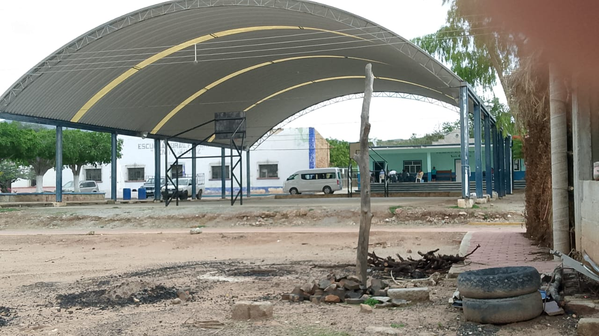

|  | |
| historia curiosidades ubicacion contacto carrusel | 
| Santa Cruz Nuevo es una aldea en Totoltepec de Guerrero, Estado de Puebla y tiene alrededor de 199 habitantes y una altitud de 1,529 metros. Santa Cruz Nuevo se encuentra cerca de la aldea de Santo Domingo Tianguistengo, así como de Otlaltepec. Además de su riqueza cultural, Santa Cruz Nuevo,Puebla es conocido por su entorno natural y la tradicional fiesta del 3 de mayo en honor al Señor de la Santa Cruz. |
 |